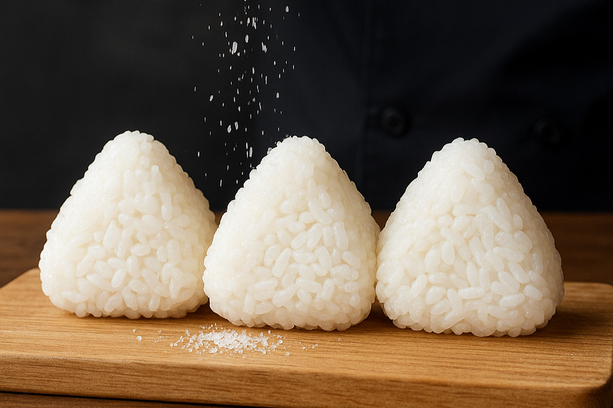

鮭、昆布、ツナマヨ、この世のありとあらゆる具材を凌駕するもの。それが塩です。
味わおう。お米本来のおいしさを。
具材の味に頼ることなく塩だけで勝負する塩にぎりはお米そのものの甘み、香り、食感を最も純粋に楽しむことができます。 炊き加減、お米の銘柄、そして握り手の塩加減という繊細な要素がダイレクトに伝わるため、まさに「ごまかしのきかない究極のおにぎり」と言えるでしょう。 良質なお米でつくられた塩にぎりは、どんな豪華な具材入りおにぎりにも勝る、深い味わいがあります。
シンプルゆえの可能性
塩にぎりは最高の脇役にもなります。具材の味が決まっていないためどんなおかずとも絶妙にマッチし、食卓の可能性を無限に広げてくれます。 シンプルゆえに飽きが来ず、場所や時間、一緒に食べるものを選ばない究極の万能性を誇ります。